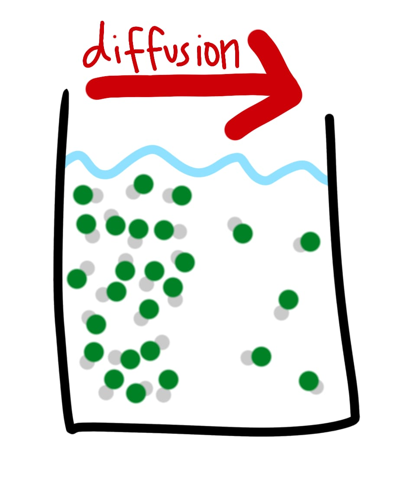
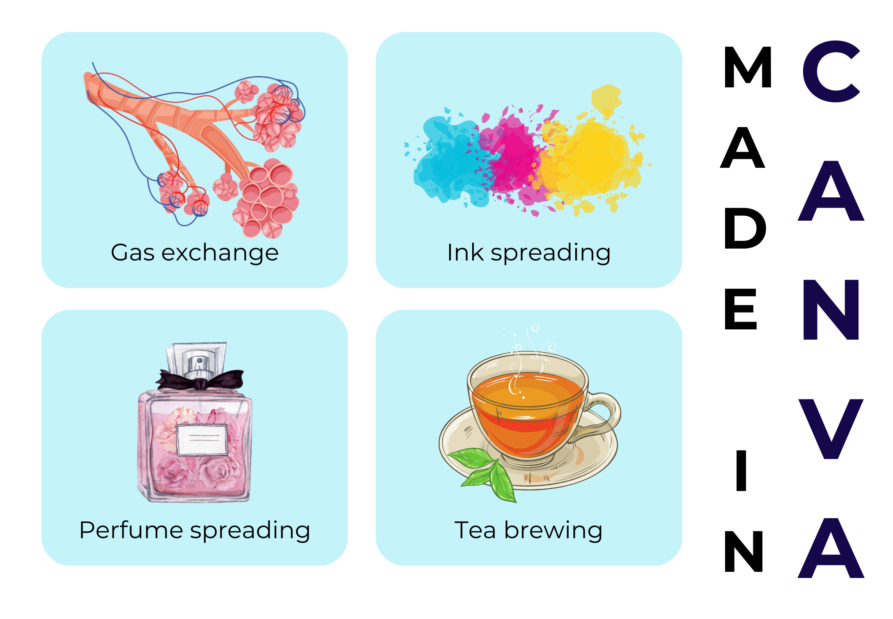

Definition: the net movement of molecules from an area where they are at a higher concentration to areas where they are at a lower concentration, due to the random movement of the molecules.
This process occurs in liquids, gases, and solids and plays a vital role in various biological processes, including gas exchange in the lungs and the movement of nutrients and waste products within cells.
Diffusion is important to cells because it allows them to gain the useful substances they require to obtain energy and grow, and lets them get rid of waste products.
A direct demonstration of gaseous random motion is provided by diffusion, the gradual mixing of molecules of one gas with molecules of another by virtue of their kinetic properties.
The diffusion process takes a relatively long time to complete, even if molecular speeds are usually great. When a bottle of concentrated ammonia solution is opened at one end of a lab bench, it takes some time before the person at the other end of the bench can smell it. The molecule experiences numerous collisions while moving to different points . Thus, diffusion of gasses always happens gradually, and not instantly as molecular speeds show. Furthermore, because the root-mean square speed of a light gas is greater than of a heavier gas , a lighter gas will diffuse in an area more quickly than will a heavier gas.
Graham’s law of diffusion In 1832 the Scottish chemist Thomas Graham found that under the same conditions of temperature and pressure, rates of diffusion for gasses are inversely proportional to the square roots of their molar masses. Known as Graham’s law of diffusion, it’s expressed mathematically as below.